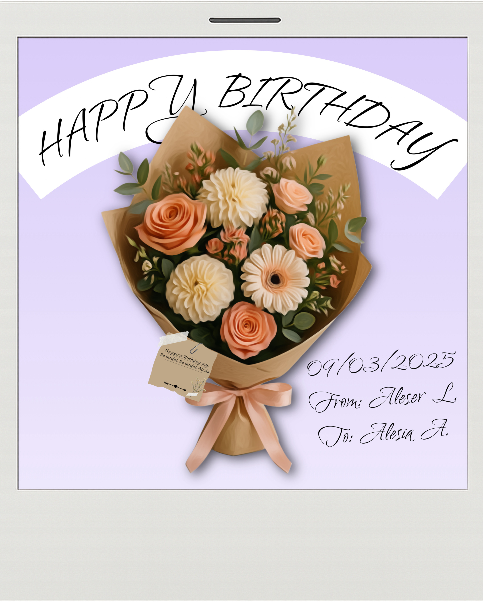
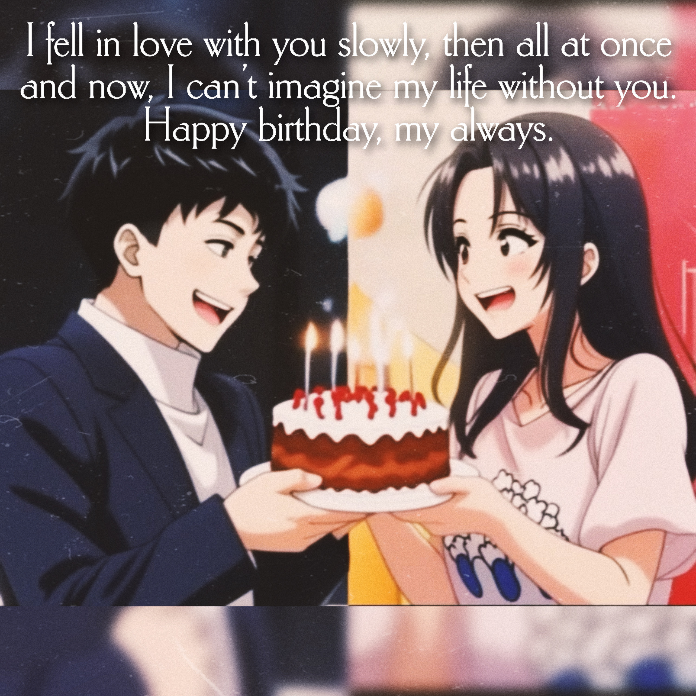
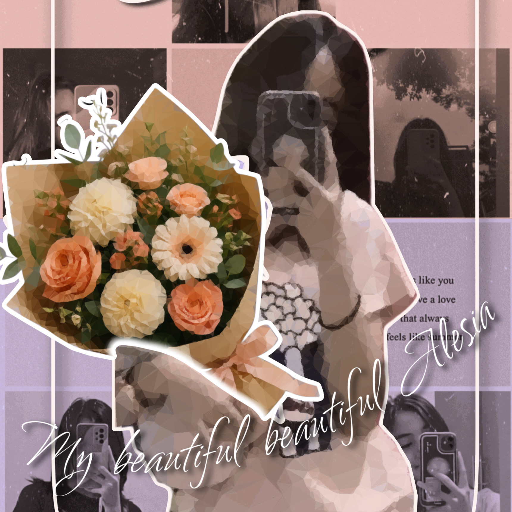
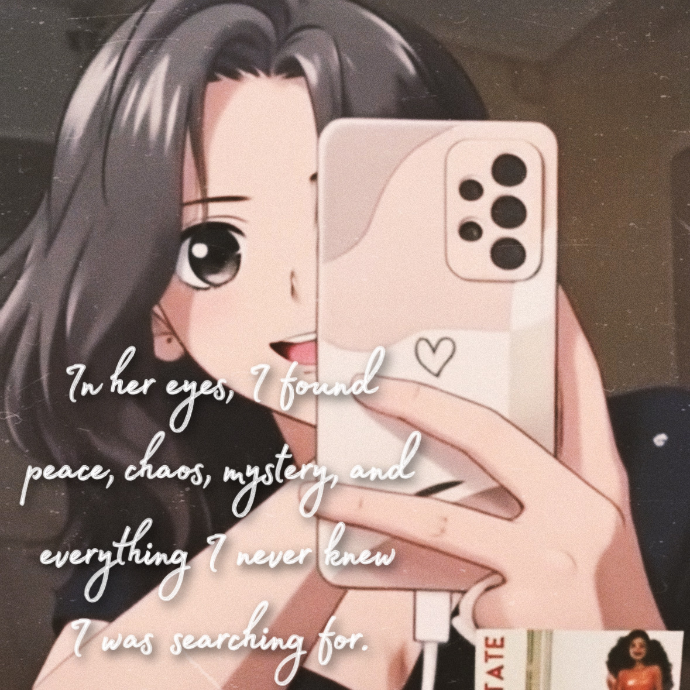
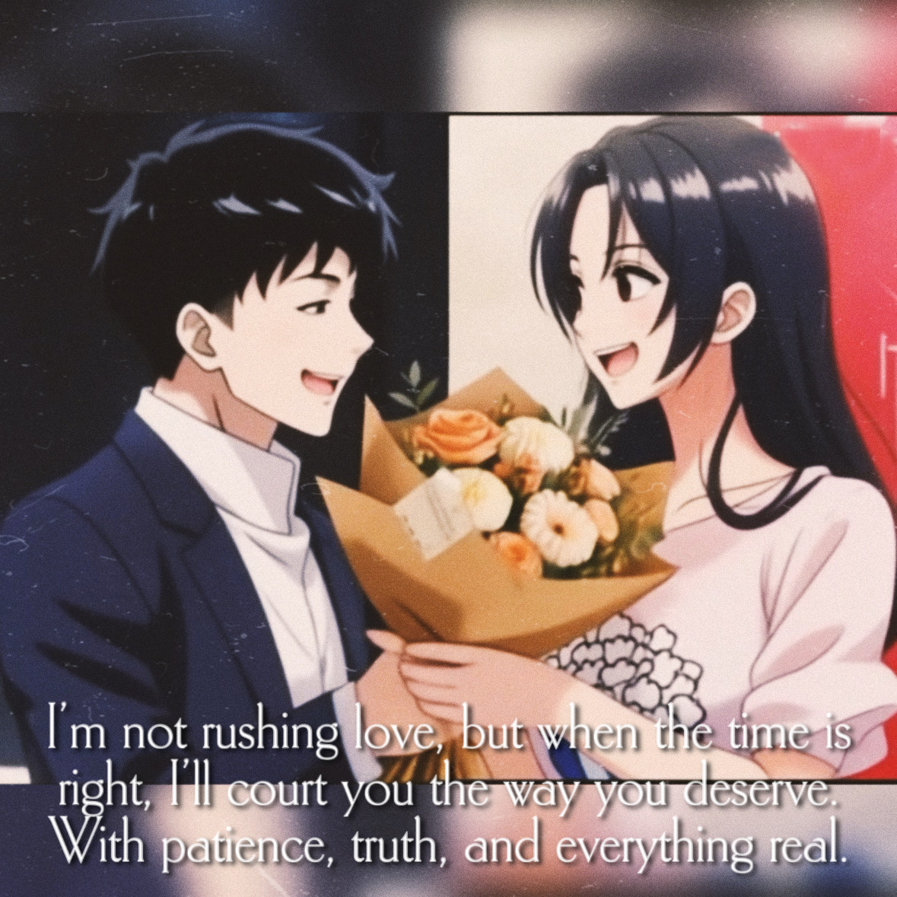

Happy 19th Birthday, Alesia! 🎉
Wishing the most wonderful lady the happiest of birthdays!
I made this little site just for you, with love. 💖
I made this little site just for you, with love. 💖

A bouquet of love, just for you!
May your day be as beautiful and bright as these flowers.
Dear Alesia,
From the moment we met, my life has been brighter, warmer, and so much sweeter. What started as a simple friendship turned out to be the most meaningful bond I’ve ever known. I still remember those early moments, how you made me feel seen, how your presence brought a light into my world that I never knew I needed.
Even during the time we lost touch, not a single day passed that I didn’t think of you. I searched, I waited, and I silently prayed you were safe and happy. And when your message came, my heart came back to life. You were in LA, blooming into the amazing person I always believed you were meant to be.
Catching up with you felt like being gifted a piece of my soul back. We laughed, we shared memories, and for a while, it felt like time stopped just for us. And when you told me you were coming back to the Philippines, I felt hope like never before.
Even though your visit was filled with responsibilities, every message, every tear, every moment we shared meant everything to me. During those final days, I found the courage to thank you for the memories, for always being a part of my story, and I finally confessed my feelings for you. And you liked me back.
From that moment on, our story changed. We went from best friends to lovers. Since then, I’ve done my best to show you how deeply I love you with my words, my actions, and all the small things in between. We’ve shared so many kilig moments, warm hugs across the distance, and an understanding that goes beyond anything I’ve ever felt.
Now here we are, still going strong. And as your birthday approaches, I just want to say this:
Thank you for being my sunshine, my confidant, my peace, and my best friend. You are the love I prayed for, the soul I’ve missed for so long, and the future I look forward to with all my heart.
Happy Birthday, my love.
I love you more than words can ever say.
Forever yours,
Mr. Aleser Lance L. Leynes [I built this website and recorded my voice on August 1, 2025, at 11:11 P.M. || I know I'm not here anymore but you still deserve to see the one last effort I did for you and maybe you still wanna hear what I sounded like when I was building this website gift for you. If the background music is too loud over my voice, you can mute it. It's an interactive website.] [Despite every thing that I felt from you; pain, depression, and heartbreak, I still forgive you. If you really want to make things right with me, then show me you really want to. If you really want to, you would. Happy Belated Birthday, and for the rest of the Birthdays to come.] - 09/05/2025
From the moment we met, my life has been brighter, warmer, and so much sweeter. What started as a simple friendship turned out to be the most meaningful bond I’ve ever known. I still remember those early moments, how you made me feel seen, how your presence brought a light into my world that I never knew I needed.
Even during the time we lost touch, not a single day passed that I didn’t think of you. I searched, I waited, and I silently prayed you were safe and happy. And when your message came, my heart came back to life. You were in LA, blooming into the amazing person I always believed you were meant to be.
Catching up with you felt like being gifted a piece of my soul back. We laughed, we shared memories, and for a while, it felt like time stopped just for us. And when you told me you were coming back to the Philippines, I felt hope like never before.
Even though your visit was filled with responsibilities, every message, every tear, every moment we shared meant everything to me. During those final days, I found the courage to thank you for the memories, for always being a part of my story, and I finally confessed my feelings for you. And you liked me back.
From that moment on, our story changed. We went from best friends to lovers. Since then, I’ve done my best to show you how deeply I love you with my words, my actions, and all the small things in between. We’ve shared so many kilig moments, warm hugs across the distance, and an understanding that goes beyond anything I’ve ever felt.
Now here we are, still going strong. And as your birthday approaches, I just want to say this:
Thank you for being my sunshine, my confidant, my peace, and my best friend. You are the love I prayed for, the soul I’ve missed for so long, and the future I look forward to with all my heart.
Happy Birthday, my love.
I love you more than words can ever say.
Forever yours,
Mr. Aleser Lance L. Leynes [I built this website and recorded my voice on August 1, 2025, at 11:11 P.M. || I know I'm not here anymore but you still deserve to see the one last effort I did for you and maybe you still wanna hear what I sounded like when I was building this website gift for you. If the background music is too loud over my voice, you can mute it. It's an interactive website.] [Despite every thing that I felt from you; pain, depression, and heartbreak, I still forgive you. If you really want to make things right with me, then show me you really want to. If you really want to, you would. Happy Belated Birthday, and for the rest of the Birthdays to come.] - 09/05/2025




A collection of the beautiful collage I made of us and you 💞